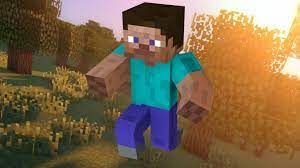

The Minecraft Story
CHAPTER 1:
"THE TELEPORT"
Alot of time ago, there was a computer that do all the thinks alone,
one time an hacker enter in it and its generated a cube world like the real life but different. A youtuber was playing that
new game, but for accident he generate in that world like if he teleport, it was night, the moon was a cube, and there was
starting to come a zombie, then a scheleton, then onother zombie, then a.... wait, what is that green monster???? it seems
a creeper is a green explosive monster that run with for feet but fortunatly he haved his loot from he first play, so he run away
and he find a sort of village, he enter in an house and go to bed, the morning when he went out
he saw a zombie going in flame🧟♂️🔥, when he saw it dye a villager come to him and
give him a pieces of bread, he said "you can't stay here, we don't have space for you"
so the man that teleported named steve he said "ok i will go, but how can i protect me?"
the villager gave him a stone sword, and steve start walking in to the new strange world... go to chapter 2
